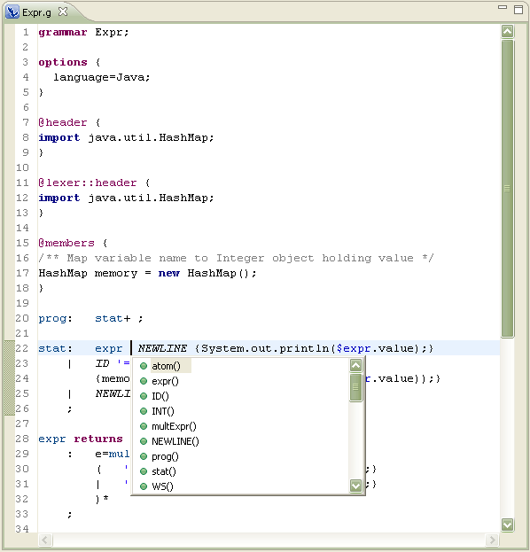

Using content assist
In this section, you will learn how to use the content assist.
- Double click in Expr.g file to open it with the ANTLR editor
- Locate one rule, for example the "stat" rule
- Press Ctrl+Space inside the stat rule to activate the content
assist. The content assist window with a list of proposals will appear.
Scroll the list to see the available choices.
